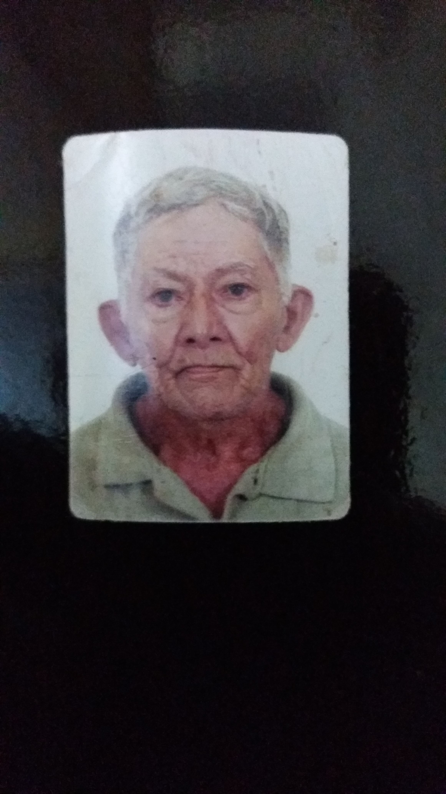

01
01Café em grãos
Para quem gosta de preparar cada detalhe.
Entre uma pausa e outra, que nunca falte um café quentinho para acompanhar o corre de cada um.

feito de afetoA nossa começa com o carinho de quem sempre soube acolher.
Venâncio Coffee é uma homenagem ao nosso avô Venâncio — à simplicidade, ao cuidado e àquele jeito especial de fazer todo mundo se sentir em casa.
É também parte de um sonho da nossa mãe, que ganha vida em cada detalhe. Mais do que café, queremos celebrar os encontros, as conversas sem pressa e os pequenos rituais que deixam a vida mais bonita.
Entre o primeiro gole
e o próximo passo, a vida flui.
Para começar o dia, fazer uma pausa ou colocar a conversa em dia. O café encontra espaço nos momentos que importam.
01Para quem gosta de preparar cada detalhe.
 02
02Praticidade para deixar o cotidiano mais gostoso.
Os produtos e detalhes de compra serão apresentados em breve.
Um cuidado que vem de casa e aparece na forma de receber, preparar e compartilhar.
Sem complicar o que é bom. Só o prazer de uma pausa que cabe na vida real.
Da manhã corrida ao fim de tarde tranquilo, cada pessoa tem seu próprio ritmo.
A Venâncio Coffee está começando a escrever seus próximos capítulos. Em breve, mais novidades por aqui.
Acompanhe essa história ↗ A vida flui. Que o café acompanhe.